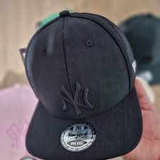

Gorra Clásica Negra
Un modelo atemporal que combina con todo. Calidad premium y ajuste perfecto.
Gorra Trucker Retro
Estilo vintage con malla trasera. Ideal para días soleados y looks relajados.
Snapback Urbana
Diseño moderno con visera plana. Perfecta para destacar en la ciudad.
Gorra Bordada
Detalles bordados a mano y materiales sostenibles. Combina diseño y conciencia ecológica.

Gorra Deportiva
Ligera y transpirable, ideal para actividades al aire libre y entrenamientos urbanos.